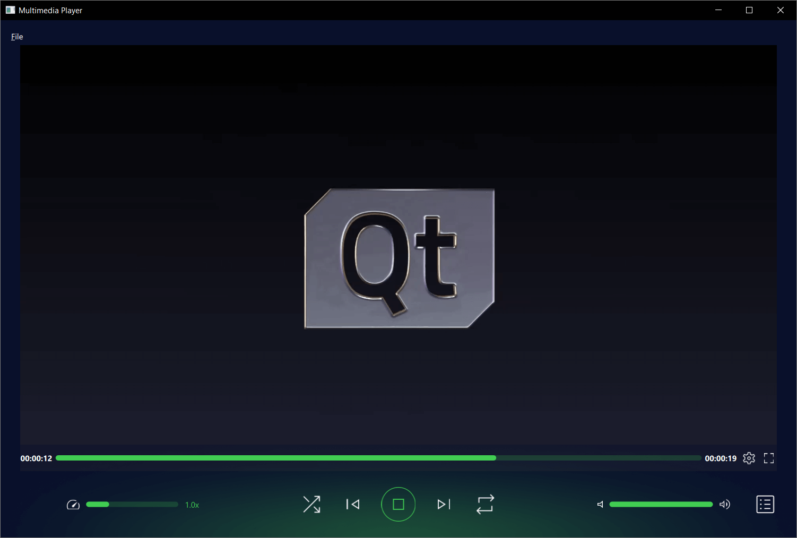
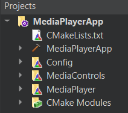
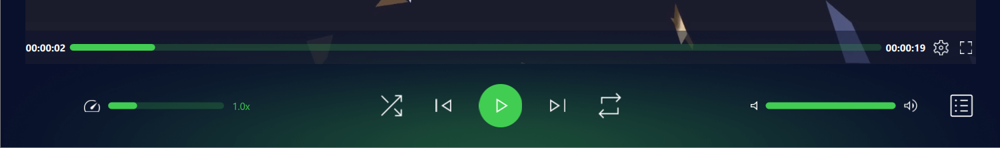

Media Player
Playing audio and video using Qt Quick.

This example demonstrates a simple multimedia player that can play audio and video files using various codecs.
Running the Example
To run the example from Qt Creator, open the Welcome mode and select the example from Examples. For more information, visit Building and Running an Example.
Project structure

This applications architecture is comprised of three custom QML modules:
MediaControlMediaPlayerConfig
This is also reflected in the top-level CMakeLists.txt file:
add_subdirectory(MediaPlayer)
add_subdirectory(MediaControls)
add_subdirectory(Config)
target_link_libraries(MediaPlayerApp PRIVATE
Qt6::Core
Qt6::Svg
Qt6::Quick
Qt6::Multimedia
MediaControlsplugin
MediaPlayerplugin
Configplugin
Each QML module is created using the qt_add_qml_module macro, for example see how the Config module is created.
qt_add_library(Config STATIC)
set_source_files_properties(Config.qml
PROPERTIES
QT_QML_SINGLETON_TYPE true
)
qt_add_qml_module(Config
URI "Config"
OUTPUT_DIRECTORY Config
QML_FILES
"Config.qml"
)
Qt Quick application
At its core this is a QML application, see Getting Started Programming with Qt Quick for information specific to that. This documentation is focused on how this example utilizes the Qt Multimedia QML Types.
The custom Config QML module
This type controls themes and layouts for an application, depending on the target operating system.
First we declare it a singleton, as we only need it to be instantiated once and creating copies would be a waste of resources.
To do that we add the following at the top of Config.qml
pragma Singleton
We then create a qmldir file in the Config directory named qmldir that contains the following:
module Config singleton Config 1.0 Config.qml
Now to use it in our application, see how it is referenced in MediaPlayer's Main.qml file:
color: Config.mainColor
The custom MediaControls QML module
This module holds all the types used to define the application's controls including:

- AudioControl.qml
- ControlImages.qml
- CustomButton.qml
- CustomRadioButton.qml
- CustomSlider.qml
- PlaybackControl.qml
- PlaybackRateControl.qml
- PlaybackSeekControl.qml
See each specific type's definition file for detail on how these controls are implemented. They are an evolution of the controls in the QML Media Player Example.
The custom MediaPlayer QML module
This module has the Main.qml file which declares where most of the top level types for the application are used, and crucially where the Qt Multimedia MediaPlayer and VideoOutput QML types are declared.
MediaPlayer {
id: mediaPlayer
playbackRate: playbackControl.playbackRate
videoOutput: videoOutput
audioOutput: AudioOutput {
id: audio
volume: playbackControl.volume
}
source: new URL("https://download.qt.io/learning/videos/media-player-example/Qt_LogoMergeEffect.mp4")
function updateMetadata() {
root.metadataInfo.clear()
root.metadataInfo.read(mediaPlayer.metaData)
}
onMetaDataChanged: updateMetadata()
onActiveTracksChanged: updateMetadata()
onErrorOccurred: {
errorPopup.errorMsg = mediaPlayer.errorString
errorPopup.open()
}
onTracksChanged: {
settingsInfo.tracksInfo.selectedAudioTrack = mediaPlayer.activeAudioTrack
settingsInfo.tracksInfo.selectedVideoTrack = mediaPlayer.activeVideoTrack
settingsInfo.tracksInfo.selectedSubtitleTrack = mediaPlayer.activeSubtitleTrack
updateMetadata()
}
onMediaStatusChanged: {
if ((MediaPlayer.EndOfMedia === mediaStatus && mediaPlayer.loops !== MediaPlayer.Infinite) &&
((root.currentFile < playlistInfo.mediaCount - 1) || playlistInfo.isShuffled)) {
if (!playlistInfo.isShuffled) {
++root.currentFile
}
root.playMedia()
} else if (MediaPlayer.EndOfMedia === mediaStatus && root.playlistLooped && playlistInfo.mediaCount) {
root.currentFile = 0
root.playMedia()
}
}
}
VideoOutput {
id: videoOutput
anchors.top: fullScreen || Config.isMobileTarget ? parent.top : menuBar.bottom
anchors.bottom: fullScreen ? parent.bottom : playbackControl.top
anchors.left: parent.left
anchors.right: parent.right
anchors.leftMargin: fullScreen ? 0 : 20
anchors.rightMargin: fullScreen ? 0 : 20
visible: mediaPlayer.hasVideo
property bool fullScreen: false
TapHandler {
onDoubleTapped: {
if (parent.fullScreen) {
root.showNormal()
} else {
root.showFullScreen()
}
parent.fullScreen = !parent.fullScreen
}
onTapped: {
root.closeOverlays()
}
}
}
The module contains the other customs types used for retrieving and displaying file information, as well as calling the file picker.
- ErrorPopup.qml
- Images.qml
- MetadataInfo.qml
- PlayerMenuBar.qml
- PlaylistInfo.qml
- SettingsInfo.qml
- ThemeInfo.qml
- TouchMenu.qml
- TracksInfo.qml
- TracksOptions.qml
- UrlPopup.qml
See each specific type's definition file for detail on how types are implemented. Some are an evolution of those found in QML Media Player Example.
New functionality
This example application has some new functionality implemented by types, such as PlaylistInfo and ThemeInfo. See the respective .qml files for detail on how these are implemented.